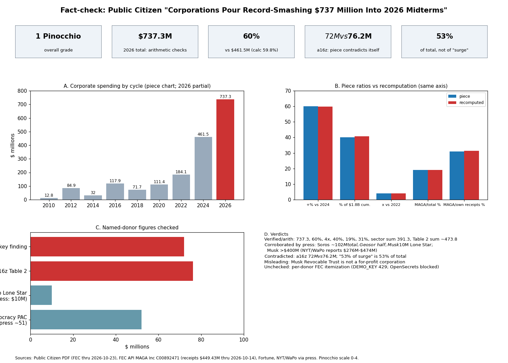

Public Citizen's October 29, 2026 report (Rick Claypool) says corporations have put $737.3 million into the 2026 midterms. Every ratio it derives recomputes correctly from its own numbers, and the named-donor claims I could check against press reporting hold up. Grade: 1 Pinocchio, with the problems below.
| Claim | Verdict | Evidence |
|---|---|---|
| $737.3M corporate, FEC through 10/23/2026 | Not independently reproducible | Consistent internally; earlier reports in the series rose $517M, $646M/$650M, then $737M. |
| +60% over $461M (2024) | True arithmetic | Chart shows $461.5M. |
| $184.1M in 2022; quadruple | True arithmetic | 4.005x. |
| 40% of $1.8B since Citizens United | True | 40.7% of $1,813.6M. |
| Crypto $233M, betting $85.2M, tech/AI $73.1M | Sums correctly; not itemized-checked | Table 1. |
| MAGA Inc. $141M, 19% / 31% of $449M | Denominator verified, numerator unchecked | FEC totals API. |
| a16z biggest corporate donor, $72M | Contradicted internally ($76.2M) | Press: Andreessen and Horowitz gave $25M to Leading the Future and ~$22M each to Fairshake; individual vs firm giving is unresolved. |
| Soros used a corporation for $52M, over $100M total | Corroborated | Fortune (2026-10-02): ~$102M to Democracy PAC, about half from Geosor Corp. |
| Musk $10M to Lone Star Liberty PAC, over $400M total | $10M corroborated; "over $400M" plausible | Press reports $276M in three months, $366M and $474M totals (NYT). The Washington Post article was blocked (HTTP 403). |
| "The norm against direct engagement by Big Business is eroding" | Opinion, not a factual quote | Author's own framing, not an attributed quote. No attributed quotes in the piece. |
| Totals undercount (dark money) | True by nature of disclosure law | Stated by the report. |
The source is an advocacy group; the report's conclusion that corporate money "crowds out" voters is opinion. The headline sums sectors, super PACs and wealthy individuals' vehicles together, and the "corporate" label stretches to a trust and a family investment company. Corporate donors giving to both parties' super PACs are counted as "corporate supremacist" spending without evidence of their aims.
Confidence: high on arithmetic and internal consistency; medium on press-corroborated donor claims; low on itemized totals.